GUIDE — 口腔機能発達不全症モード
口腔機能発達不全症モードの使い方──チェックリストの入力から管理計画書の印刷まで
口腔機能管理くんの「口腔機能発達不全症」モードで、お子さんの評価をしてから、管理計画書を印刷するまでを、実際の画面で順番に説明します。
サインインとPINの設定がまだの方は、先に「口腔機能管理くんの使い方（はじめての1人目）」の STEP 1 をご覧ください。
このページの画面は、バージョン 1.9.7 の iPad のものです。患者は架空の「見本 そら」くん（5歳）で、チェックの内容も説明用です。画面の例は離乳完了後（別紙2）のもので、離乳完了前（別紙1）との違いは本文に書き添えました。
iPhone・Android でも流れは同じです。Android の印刷・保存のメニューの違いは「はじめての使い方の STEP 6」に書きました。
POINTS — 先に知っておくと迷わないこと
- 評価を始めたら、まず「離乳完了前（別紙1）」か「離乳完了後（別紙2）」を選びます
- 項目には「医院」（医院で見る）と「患者」（保護者に聞く）の印があります
- 保護者に聞く項目は、患者モードにして iPad を渡せば、保護者の方に直接答えてもらえます
- 評価の保存は長押し（約1秒）。患者モードとの切り替えも長押し（約2秒）です
- 管理計画書の画面の右上の「PDF」から、印刷プレビューに進みます。PDFはチェックシートと管理計画書の2ページです
STEP 1発達不全症モードで患者さんを登録する
ホームで「口腔機能発達不全症」を選んで、患者さんを登録します。
- ホームの 口腔機能発達不全症 のカードを押します。患者一覧が開き、左上に「発達不全症モード」と出ます。
- 右上の + 新規 を押します。
- 患者名を入れます。必須は患者名だけです。
- 右上の 保存 を押します（普通に押すだけで保存されます）。
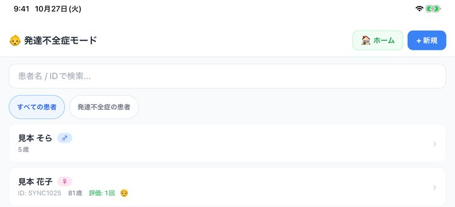
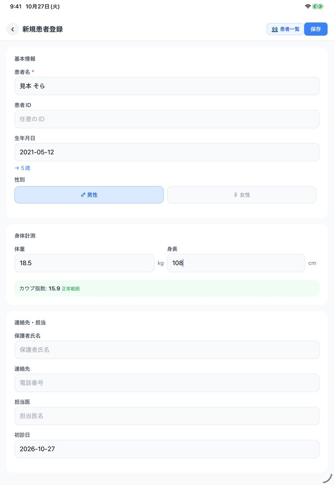
生年月日は入れておくのがおすすめです。年齢が出るだけでなく、評価の時期が決まっている項目（STEP 3・STEP 4）の判断にも使います。
体重・身長を入れておくと、チェックリストの体格の項目（離乳完了後は「C13 やせ、または肥満である」）が、自動で判定されます。離乳完了前は、年齢によらずカウプ指数です。離乳完了後は、生年月日が登録されていれば年齢で分けて、6歳未満がカウプ指数、6〜12歳がローレル指数、13歳以上がBMIです。
STEP 2評価を始めて、離乳完了前か完了後かを選ぶ
患者詳細から評価を始めて、チェックリストの種類を選びます。
- 患者一覧で患者さんの名前を押すと、患者詳細が開きます。
- いちばん上の青いボタン 発達不全症の新規評価を開始 を押します。
- チェックシートの上で、離乳完了前（別紙1） か 離乳完了後（別紙2） を選びます。
- 検査日を確かめます（今日の日付が入っています）。
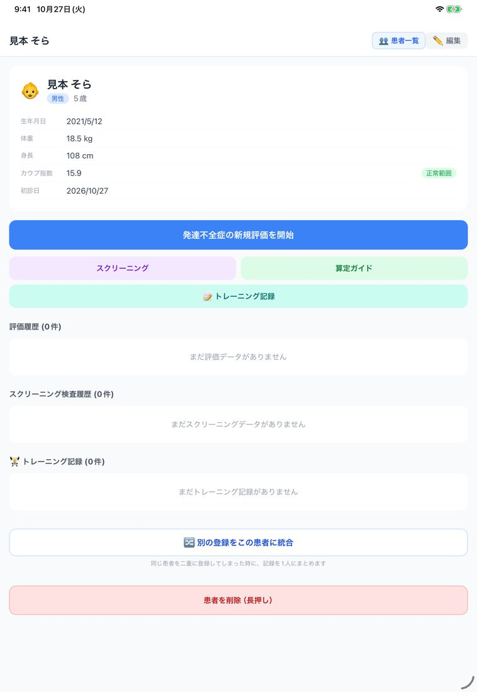
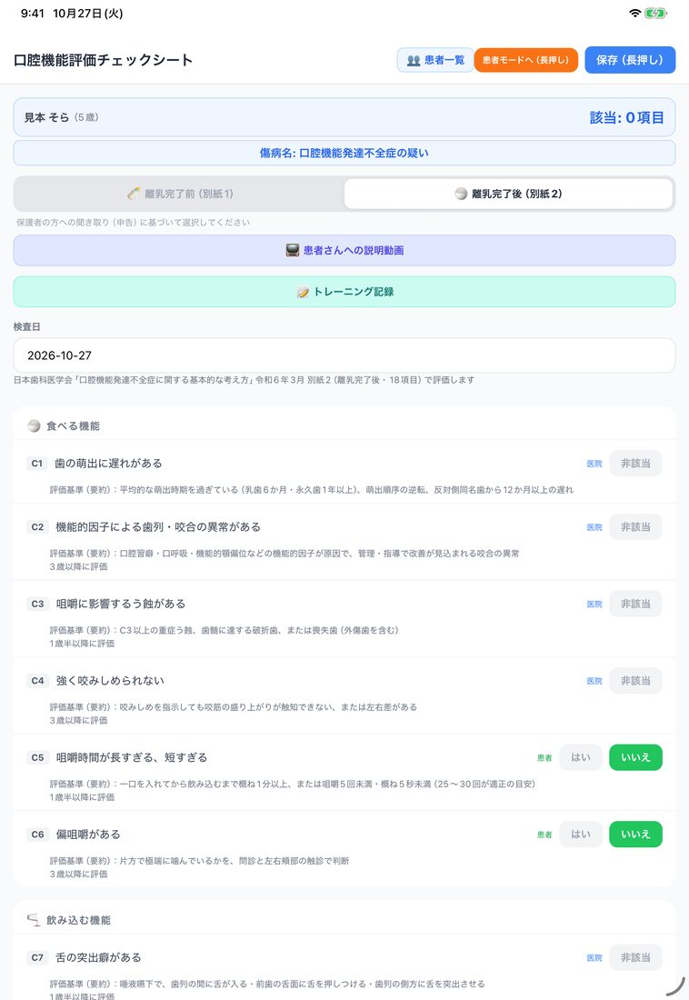
どちらを選ぶかは、保護者の方への聞き取り（申告）をもとに医院で決めます。
離乳完了前は別紙1（13項目）、離乳完了後は別紙2（18項目）のチェックリストになります。項目は、日本歯科医学会「口腔機能発達不全症に関する基本的な考え方」（令和6年3月）の様式に合わせています。項目の意味は「チェックリストとC項目の見方」で解説しています。
STEP 3チェックリストを入力する
当てはまる項目を「該当」にしていきます。
- 「医院」の印がある項目は、診察で確かめて、当てはまれば 非該当 を押して 該当 に切り替えます。
- 「患者」の印がある項目は、保護者の方に聞いて、はい か いいえ を選びます。ふつうの二択の項目は「はい」で該当です（口腔習癖と体格は下の説明と STEP 4 を見てください）。離乳完了前（別紙1）では、「患者」の項目も 該当・非該当 で切り替えます。
- 口腔習癖（離乳完了後の C11）は、当てはまる癖を選びます。癖を1つ以上選ぶと該当になります。
- 当てはまる項目が増えるたびに、画面の上の「該当」の数と傷病名が変わります。
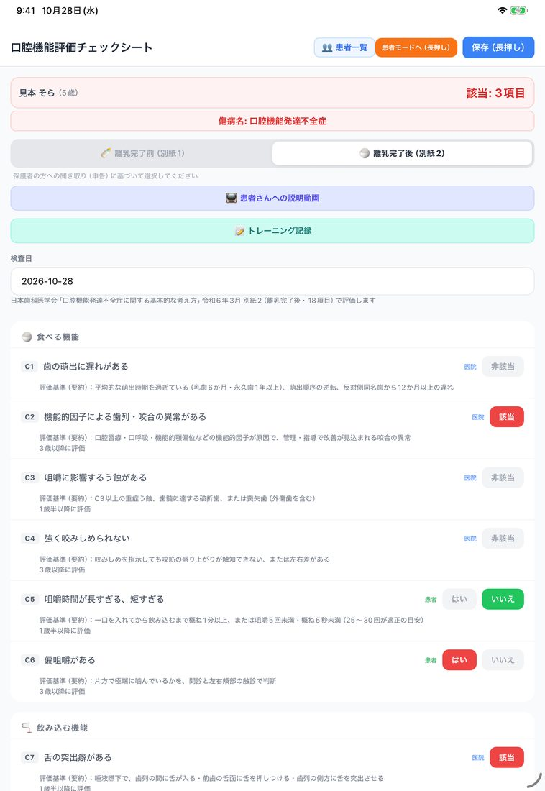
離乳完了後（別紙2）では、各項目の下に評価基準の要約と、学会の資料で決まっている評価の時期（「3歳以降に評価」など）が出ます。
評価の時期より幼いお子さんで「該当」にした項目があると、保存するときに確認が出ます。止めはしないので、医院の判断でそのまま保存できます。
該当の数や傷病名の表示は、チェックの内容を学会の基準に照らして集計したものです。診断は歯科医師が行い、算定の要件は告示・通知で確かめてください（このアプリは医療機器ではありません）。
STEP 4保護者に答えてもらう（患者モード）
「患者」の項目は、保護者の方に iPad で直接答えてもらえます。
- 右上のオレンジのボタン 患者モードへ（長押し） を、約2秒押し続けます。
- 画面が「問診（患者さま用）」に変わります。保護者に聞く項目だけが、保護者向けのやさしい言葉で並びます。
- iPad を保護者の方に渡して、はい か いいえ で答えてもらいます。
- 戻ってきたら、右上の 医院モードへ（長押し） を約2秒押して、医院の画面に戻します。
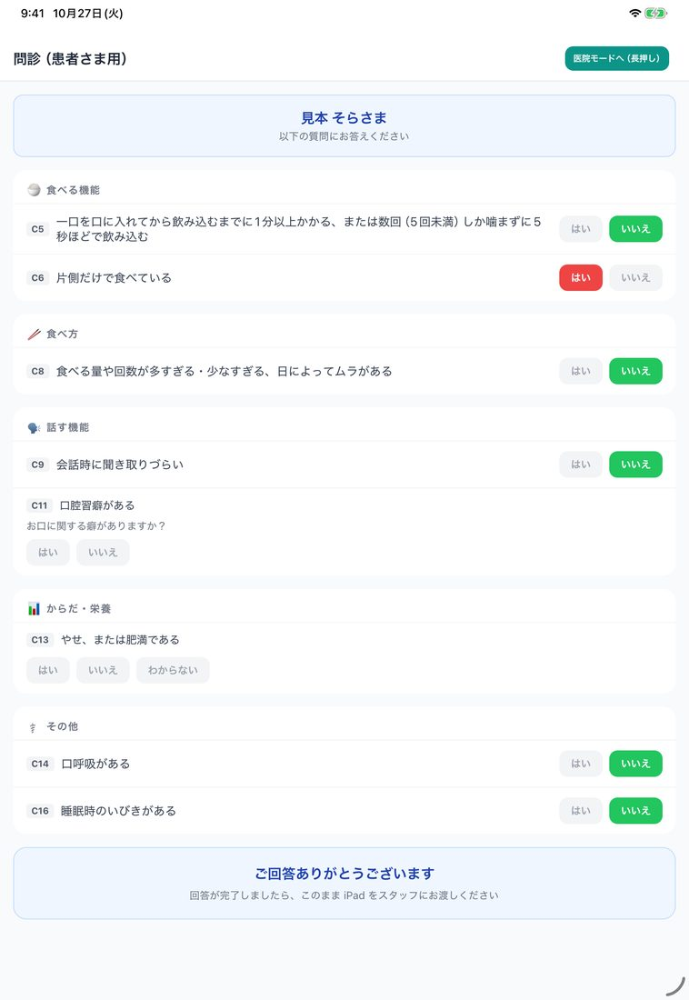
保護者の方の答えは、医院の画面の同じ項目に入ります。医院の画面に戻ってから、確かめて直すこともできます。
「はい」がそのまま該当にならない項目が2つあります。
口腔習癖は、「はい」を押したあとに、当てはまる癖まで選んでもらいます。癖を選ばないと該当になりません。
体格（やせ・肥満）は「はい・いいえ・わからない」で答えてもらいますが、これは参考です。該当かどうかは、体重・身長からの自動判定で決まります。
患者モードでは、医院が見る項目、評価基準、保存のボタンは出ません。保存は医院モードに戻してから行います。
離乳完了後（別紙2）で評価の時期が決まっている項目は、検査日の時点でその年齢に達していないお子さんには、患者モードでは出しません（例：構音は5歳以降、偏咀嚼は3歳以降）。生年月日が登録されていないときは、年齢が分からないので隠さずに出します。
STEP 5長押しで保存する
画面のいちばん下まで確かめて、長押しで保存します。
- 下のほうには、経過写真（口腔外・口腔内）、スクリーニング検査値（口唇閉鎖力・舌圧。離乳完了後だけ）、備考の欄があります。必要なものだけ入れます。
- 右上の 保存（長押し） か、いちばん下の 評価を保存（長押し） を、約1秒押し続けます。
- 「保存完了」が出て、管理計画書の画面に進みます。
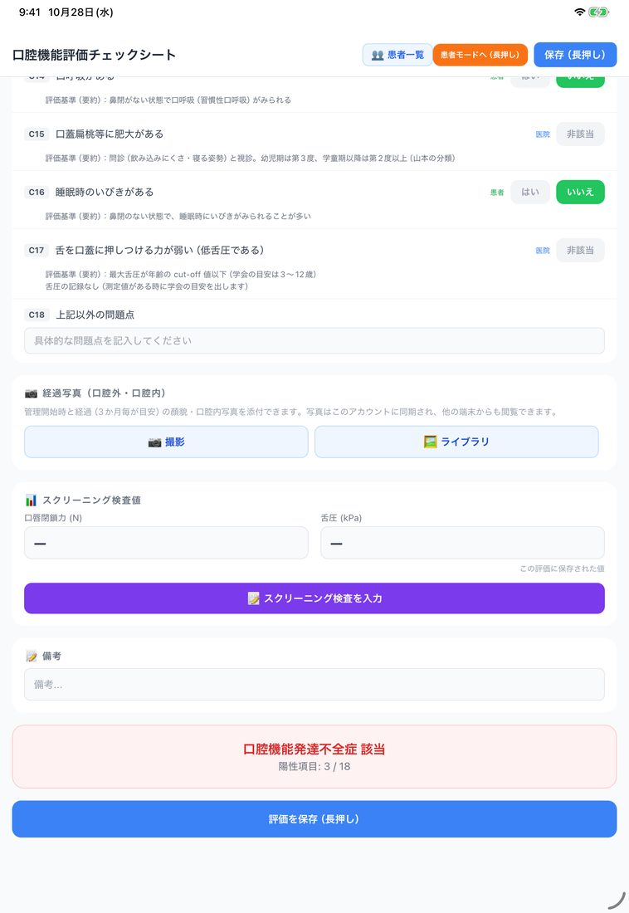
保存のボタンが長押しなのは、押し間違いを防ぐためです。普通に押しただけでは保存されません。
いちばん下の「口腔機能発達不全症 該当」は、該当が1項目以上あることを示す表示です。診断基準を満たすかどうかは、画面の上の「傷病名」で見てください（傷病名の見方）。
口唇閉鎖力や舌圧を測ったときは、スクリーニング検査を入力 から記録します。保存した値は、患者詳細のスクリーニング検査履歴でも見られます。
STEP 6管理計画書を確かめて保存する
評価を保存すると、管理計画書の画面が自動で開きます。
傷病名と該当した項目の下に、項目ごとの問題点と計画が、ひな形の文で入っています。項目によって「短期計画・中長期計画」の2つの欄か、「管理計画」の1つの欄になります。「上記以外の問題点」など、ひな形のない項目は入力してください。
いちばん下には「総合管理計画」と「追加所見・メモ」があります。
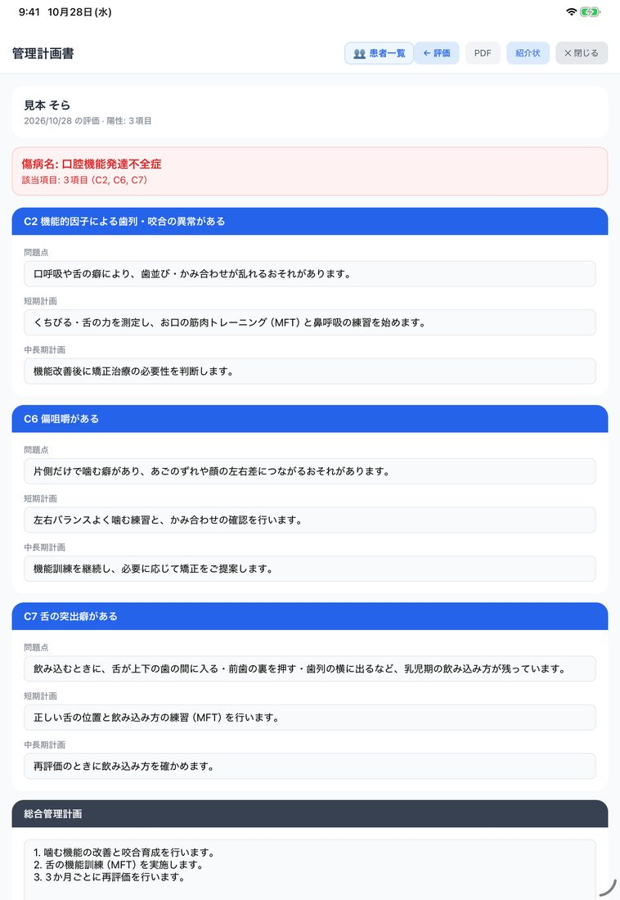
- 内容を確かめて、必要ならお子さんに合わせて書き換えます。
- 画面の下の 保存 を押します（普通に押すだけです）。
あとから直したいときは、患者詳細の評価履歴から、その評価の管理計画書を開けます。
STEP 7PDFを作って印刷する
PDFを作って、印刷または保存します。
- 管理計画書の画面の右上の PDF を押すと、印刷プレビューが開きます（このとき計画も保存されます）。
- 画面のいちばん下の PDFを保存 / 印刷 / 共有（長押し） を、約2秒押し続けます。
- PDFができて、共有のメニューが開きます。
- iPhone・iPad では プリント でAirPrint対応のプリンターから印刷、"ファイル"に保存 で端末やクラウドに保存できます。
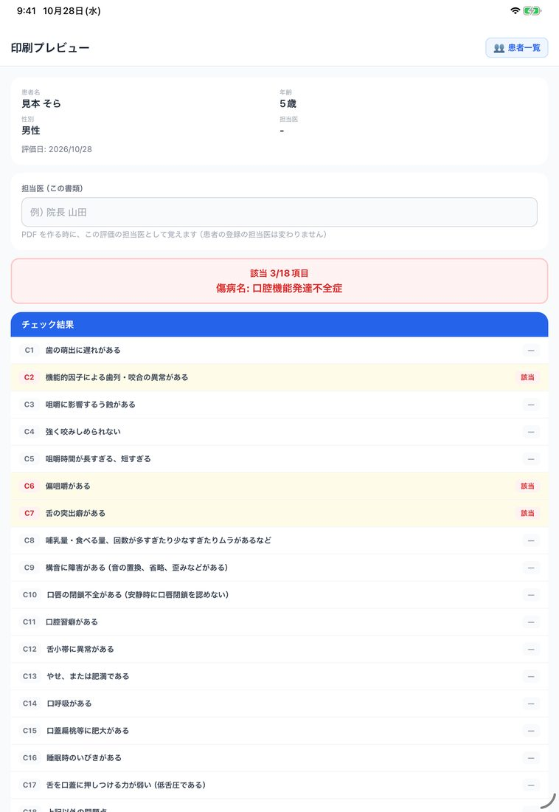
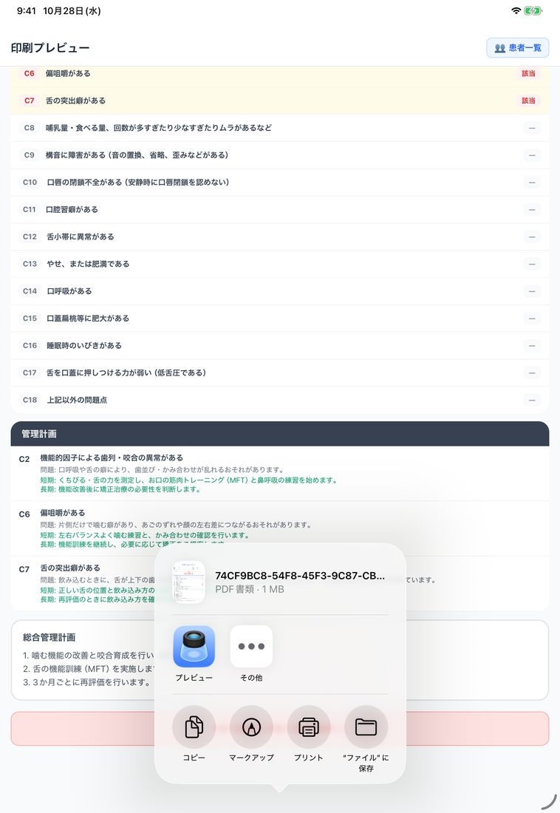
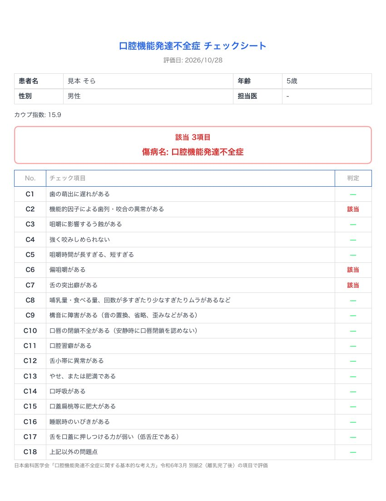
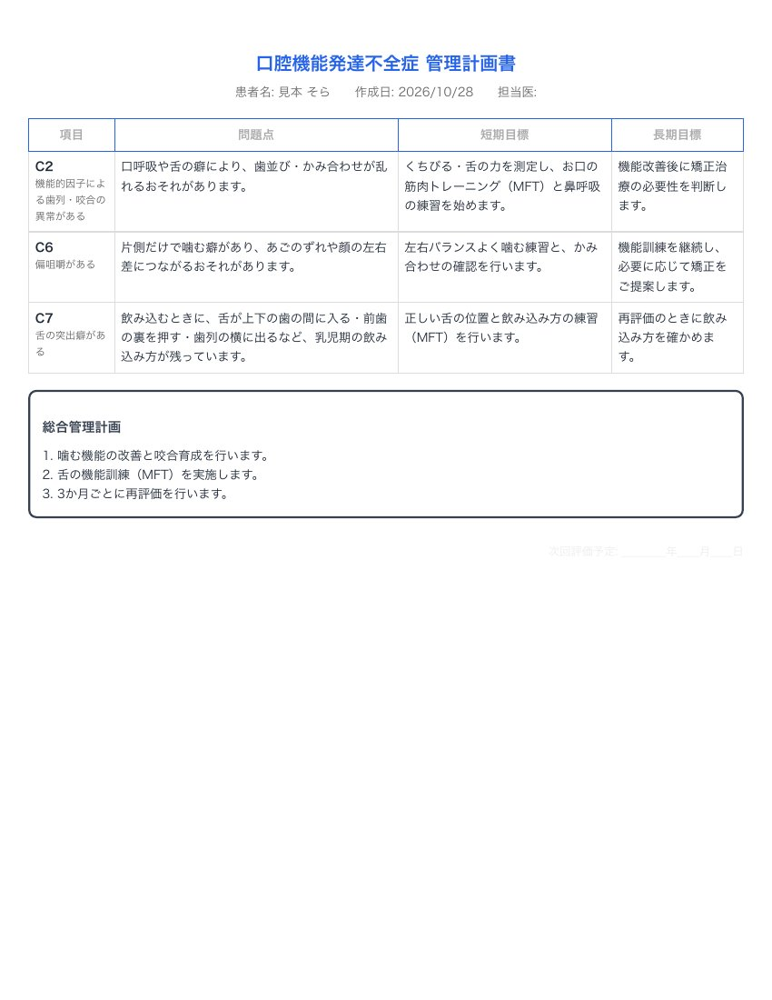
PDFは、標準では1ページ目がチェックシート、2ページ目が管理計画書の2ページです（自由記載が長いとページが増えます）。
印刷プレビューは、患者詳細の評価の行にある 印刷 からも開けます。患者IDや日付・署名欄を入れるかどうかは、ホームの ⚙️ データ管理 の「管理計画書の設定」で選べます。
これで1回目の評価は完了です。再評価のときは、患者詳細の青いボタンから、新しい評価を始めます。
画面に出る傷病名の見方
チェックシートの上の「傷病名」の欄には、チェックの内容に応じて、次の3つのどれかが出ます。
| 画面の表示 | 出るとき（離乳完了後・別紙2） |
|---|---|
| 口腔機能発達不全症 | 咀嚼機能（C1〜C6）が1項目以上、かつ「食べる機能」「話す機能」（C1〜C12）が合わせて2項目以上 |
| 口腔機能管理中 | 該当が1項目以上あるが、上の基準には届かない |
| 口腔機能発達不全症の疑い | 該当が0項目 |
離乳完了後の C13（体格）・C14〜C18（その他）は、全体の該当の数には入りますが、上の基準の数には入りません。離乳完了前（別紙1）では、「食べる機能」「話す機能」の項目（C-1〜C-10）が2つ以上該当し、そのうち哺乳・離乳の項目（C-1〜C-9）を1つ以上含むときに「口腔機能発達不全症」と出ます。別紙1の C-11（体格）〜C-13（その他の問題点）は、全体の該当の数には入りますが、この基準の数には入りません。
チェックシートのいちばん下の「口腔機能発達不全症 該当／非該当」は、該当が1項目以上あるかどうかの表示です。たとえば C14（口呼吸）だけが該当のとき、上の傷病名は「口腔機能管理中」、下は「該当」と出ます。
診断は歯科医師が行ってください。小児口腔機能管理料の点数の目安は、患者詳細の 算定ガイド で確かめられます。算定の要件は「口腔機能発達不全症の算定（令和8年度）」で解説しています。
つまずいたとき（よくある質問）
患者モードから医院の画面に戻れません。
右上の 「医院モードへ（長押し）」を約2秒押し続けてください。保護者の方が誤って戻らないように、切り替えは長押しにしています。
患者モードでは評価を保存できないので、医院モードに戻してから保存します。
患者モードで出てこない質問があります。
患者モードには、保護者に聞く項目だけが出ます。医院が見る項目は出ません。
また、離乳完了後で評価の時期が決まっている項目は、検査日の時点でその年齢に達していないお子さんには出しません（生年月日が登録されているとき）。医院モードではすべての項目が見えます。
離乳完了前と離乳完了後のどちらを選べばいいですか？
保護者の方への聞き取り（申告）をもとに、医院で選んでください。離乳完了前は別紙1（13項目）、離乳完了後は別紙2（18項目）です。
「評価を保存」を押しても保存されません。
評価の保存ボタンは長押しです。約1秒押し続けてください。
患者モードになっているときは、保存のボタンが出ません。右上の「医院モードへ（長押し）」で戻してください。
無料でどこまで使えますか？
患者の登録は無制限です。発達不全症の評価は、評価を保存した患者4人まで無料で使えます。同じ患者の再評価や、保存済みの評価の修正は人数に数えません。
5人目の患者の最初の評価を保存するときに、有料プランへの登録が必要になります。料金はアプリ紹介ページをご覧ください。
ほかの質問（PINを忘れたとき、別の端末で使うときなど）は、「はじめての使い方のよくある質問」とサポートページをご覧ください。
口腔機能管理くん──口腔機能低下症・口腔機能発達不全症・歯周検査・咬筋検査の記録と、管理計画書の作成を支援するアプリです（医療機器ではありません。診断は歯科医師が行います）。
iPhone・iPad・Android。患者の登録は無制限、検査の評価は種類ごとに4人まで無料。
App Store Google Play アプリ紹介ページこのページは、アプリのバージョン 1.9.7（2026年10月時点）の画面と動作をもとに書いています。画面の文言や配置は、今後のアップデートで変わることがあります。患者名とチェックの内容は説明用の架空のものです。